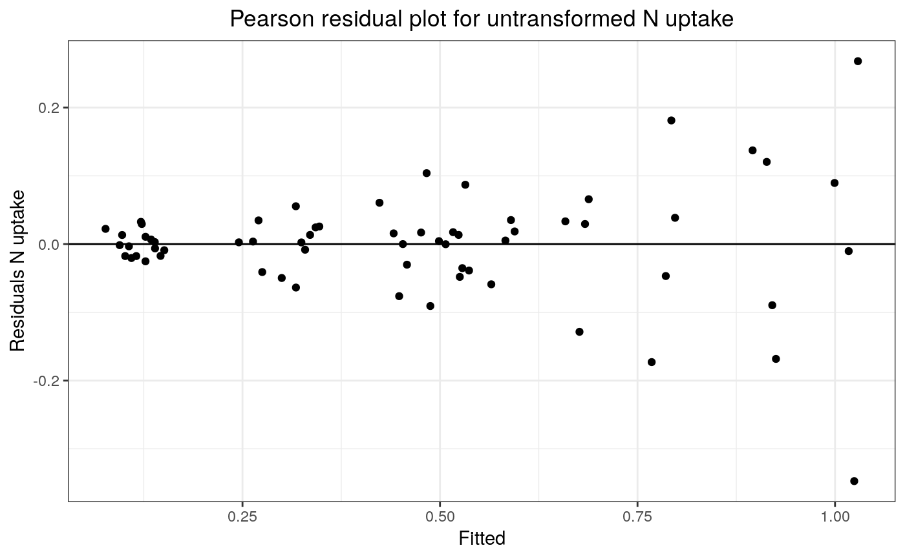
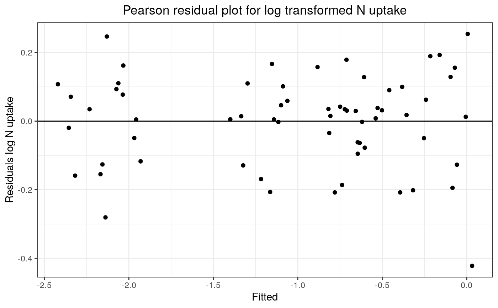
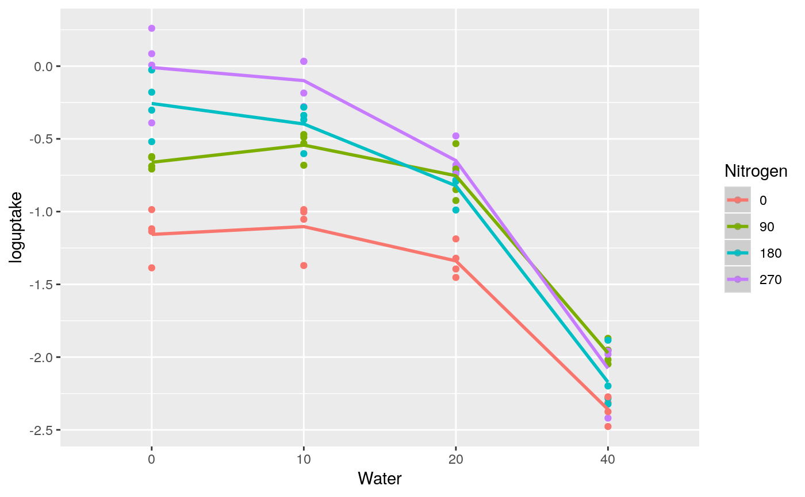
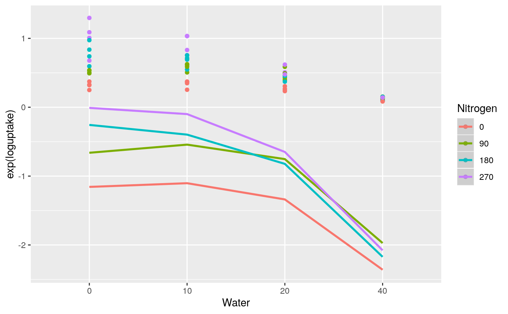
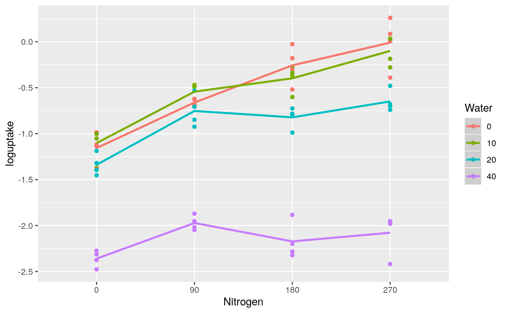

Example 3: Polynomial regression model with two quantitative level treatment factors
example3.RdGomez & Gomez (1984, p. 401) report a two-factor nitrogen uptake greenhouse experiment on rice involving duration of water stress (W) and level of nitrogen application (N) with four complete replicates of each treatment. The experiment had four water-stress levels (0, 10, 20 and 40 days) applied as main-plot treatments and four nitrogen rates (0, 90, 180 and 270 kg/ha) applied as sub-plot treatments. The four sub-plot treatments were randomized within main plots and the four main plot treatments were randomized within complete replicate blocks.
Details
The first stage of the analysis is the calculation of polynomial powers of N and W using the poly() function. The N rates are re-scaled by division by 100 while the W rates are re-scaled by division by 10.
The second stage shows a Pearson residual plot of the untransformed N uptake data versus a Pearson residual plot of the log transformed N uptake data. Comparison of the two plots shows that the untransformed residuals increase as the fitted values increase whereas the log transformed N uptake residuals are approximately constant over the full range of the fitted values. This shows that a log transformation of the N uptake data gives a dependent variate with constant variance over the full range of fitted values which shows that a simple unweighted analysis of variance is valid for the effects of the treatment factors.
Sometimes the original scale of measurement is the proper scale of measurement for an analysis, e.g. an analysis of actual measured crop yields, and then it might be appropriate to fit a weighted analysis of variance in the original scale of measurement of the dependent variable (see Faraway 2002 Chapter 5). However, the log transformation model assumes a proportional rather than an additive model for treatment effects and, in this example, a proportional model for nitrogen uptake may well be a more natural physiological model than a simple additive model.
The next stage compares the fit of a first-order linear model (Table 9) versus a second-order quadratic model (Table 10). The first-order model shows significant lack-of-fit and is not adequate for the data. The second-order model is also not fully adequate for the data as there is a significant N lack of fit term indicating a significant cubic effect. However, the magnitude of the cubic effect is relatively small and it will be assumed here that a quadratic model is adequate for the data.
The final stage fits regression coefficients for the quadratic response surface model on the re-scaled water stress and re-scaled nitrogen rate treatments. The fitted coefficients are then used to plot the fitted quadratic log uptake curves versus the nitrogen rate treatments and the water stress treatments, as shown in Fig 4.
Note that in this analysis all the polynomial models are built by adding individual polynomial effects in accordance with the requirements of functional marginality.
agriTutorial: return to home page if you want to select a different example
References
Gomez, K. A., & Gomez, A. A. (1984). Statistical Procedures for Agricultural Research. John Wiley & Sons.
Kenward, M. G., & Roger, J. H. (1997). Small sample inference for fixed effects from restricted maximum likelihood. Biometrics, 53, 983–997.
Piepho, H., & Edmondson, R. (2018). A tutorial on the Statistical Analysis of Factorial Experiments with Qualitative and Quantitative treatment factor levels. Journal of Agronomy and Crop Science. (https://onlinelibrary.wiley.com/doi/full/10.1111/jac.12267).
Examples
library(broom) library(broom.mixed) library(dplyr) library(emmeans) library(ggfortify) library(ggplot2) library(lmerTest) library(magrittr) library(pbkrtest) library(tidyr) options(contrasts = c('contr.treatment', 'contr.poly')) ##----greenrice---- greenrice <- greenrice %>% dplyr::mutate( loguptake = log(uptake) , Nitrogen = factor(N) , Water = factor(W) ) ##----fm3.1---- fm3.1 <- lmer(uptake ~ Replicate + Nitrogen * Water + (1|Replicate:Main), data = greenrice)#>##----fm3.1.Plot1---- fm3.1.Augment <- broom.mixed::augment(fm3.1) ggplot(data = fm3.1.Augment, mapping = aes(x = .fitted, y = .resid)) + geom_point() + geom_hline(yintercept = 0) + labs( x = "Fitted" , y = "Residuals N uptake" , title = "Pearson residual plot for untransformed N uptake") + theme_bw() + theme(plot.title = element_text(hjust = 0.5))##----fm3.2---- fm3.2 <- lmer(loguptake ~ Replicate + Nitrogen * Water + (1|Replicate:Main), data = greenrice)#>##----fm3.2.Plot1---- fm3.2.Augment <- broom.mixed::augment(fm3.2) ggplot(data = fm3.2.Augment, mapping = aes(x = .fitted, y = .resid)) + geom_point() + geom_hline(yintercept = 0) + labs( x = "Fitted" , y = "Residuals log N uptake" , title = "Pearson residual plot for log transformed N uptake") + theme_bw() + theme(plot.title = element_text(hjust = 0.5))##----fm3.3---- fm3.3 <- lmer(loguptake ~ N + W + Nitrogen * Water + (1|Replicate) + (1|Replicate:Main), data = greenrice)#>#>fm3.3.ANOVA <- anova(fm3.3, ddf = "Kenward-Roger", type = 1) fm3.3.Summary <- summary(fm3.3, ddf = "Kenward-Roger", type = 1)$coef#> Warning: additional arguments ignored##----fm3.3.ANOVA---- fm3.3.ANOVA#> Type I Analysis of Variance Table with Kenward-Roger's method #> Sum Sq Mean Sq NumDF DenDF F value Pr(>F) #> N 4.6529 4.6529 1 36 183.8068 1.033e-15 *** #> W 25.5240 25.5240 1 9 1008.2970 1.496e-10 *** #> Nitrogen 0.6297 0.3148 2 36 12.4374 7.826e-05 *** #> Water 2.7392 1.3696 2 9 54.1046 9.633e-06 *** #> Nitrogen:Water 1.3181 0.1465 9 36 5.7856 5.879e-05 *** #> --- #> Signif. codes: 0 ‘***’ 0.001 ‘**’ 0.01 ‘*’ 0.05 ‘.’ 0.1 ‘ ’ 1##----fm3.3.Summary---- fm3.3.Summary#> Estimate Std. Error df t value Pr(>|t|) #> (Intercept) -1.156645121 0.0800308006 47.89770 -14.4524997 4.345732e-19 #> N 0.004248876 0.0004166791 36.00000 10.1969984 3.679444e-12 #> W -0.030069847 0.0028125837 44.30769 -10.6911829 7.480642e-14 #> Nitrogen90 0.113364341 0.0992186272 36.00000 1.1425712 2.607589e-01 #> Nitrogen180 0.135067013 0.0992186272 36.00000 1.3613070 1.818770e-01 #> Water10 0.354424925 0.1014091479 44.30769 3.4949995 1.089079e-03 #> Water20 0.419364354 0.0974307577 44.30769 4.3042296 9.124074e-05 #> Nitrogen90:Water10 0.064245275 0.1591037612 36.00000 0.4037948 6.887523e-01 #> Nitrogen180:Water10 -0.194517509 0.1591037612 36.00000 -1.2225827 2.294313e-01 #> Nitrogen270:Water10 -0.143681681 0.1591037612 36.00000 -0.9030690 3.724925e-01 #> Nitrogen90:Water20 0.089807632 0.1591037612 36.00000 0.5644595 5.759418e-01 #> Nitrogen180:Water20 -0.383553658 0.1591037612 36.00000 -2.4107140 2.115282e-02 #> Nitrogen270:Water20 -0.457590823 0.1591037612 36.00000 -2.8760528 6.725550e-03 #> Nitrogen90:Water40 -0.108344146 0.1591037612 36.00000 -0.6809653 5.002504e-01 #> Nitrogen180:Water40 -0.712343182 0.1591037612 36.00000 -4.4772240 7.330320e-05 #> Nitrogen270:Water40 -0.865393492 0.1591037612 36.00000 -5.4391768 3.905369e-06##----fm3.4---- fm3.4 <- lmer(loguptake ~ N * W + I(N^2) + I(W^2) + Nitrogen * Water + (1|Replicate) + (1|Replicate:Main), data = greenrice)#>#> Warning: Some predictor variables are on very different scales: consider rescaling#>#> Warning: Some predictor variables are on very different scales: consider rescaling#> Warning: additional arguments ignored#> Estimate Std. Error df t value #> (Intercept) -1.156645e+00 8.003080e-02 47.89770 -14.4524997 #> N 6.499993e-03 1.627184e-03 36.00000 3.9946272 #> W 1.186659e-02 1.014091e-02 44.30769 1.1701694 #> I(N^2) -8.337470e-06 6.124607e-06 36.00000 -1.3613070 #> I(W^2) -1.048411e-03 2.435769e-04 44.30769 -4.3042296 #> Nitrogen90 -2.170267e-02 1.185889e-01 36.00000 -0.1830075 #> Water10 3.990166e-02 1.042934e-01 44.30769 0.3825905 #> N:W -8.012903e-05 1.473183e-05 36.00000 -5.4391768 #> Nitrogen90:Water10 1.363614e-01 1.563171e-01 36.00000 0.8723381 #> Nitrogen180:Water10 -5.028526e-02 1.546211e-01 36.00000 -0.3252161 #> Nitrogen270:Water10 7.266669e-02 1.434142e-01 36.00000 0.5066911 #> Nitrogen90:Water20 2.340399e-01 1.546211e-01 36.00000 1.5136352 #> Nitrogen180:Water20 -9.508916e-02 1.546211e-01 36.00000 -0.6149819 #> Nitrogen270:Water20 -2.489408e-02 1.377879e-01 36.00000 -0.1806695 #> Nitrogen90:Water40 1.801204e-01 1.403163e-01 36.00000 1.2836735 #> Nitrogen180:Water40 -1.354142e-01 1.403163e-01 36.00000 -0.9650636 #> Pr(>|t|) #> (Intercept) 4.345732e-19 #> N 3.062489e-04 #> W 2.481886e-01 #> I(N^2) 1.818770e-01 #> I(W^2) 9.124074e-05 #> Nitrogen90 8.558189e-01 #> Water10 7.038526e-01 #> N:W 3.905369e-06 #> Nitrogen90:Water10 3.888052e-01 #> Nitrogen180:Water10 7.469001e-01 #> Nitrogen270:Water10 6.154611e-01 #> Nitrogen90:Water20 1.388492e-01 #> Nitrogen180:Water20 5.424347e-01 #> Nitrogen270:Water20 8.576402e-01 #> Nitrogen90:Water40 2.074575e-01 #> Nitrogen180:Water40 3.409515e-01##----fm3.4.Plot1---- ggplot(data = greenrice2, mapping = aes(x = Water, y = loguptake, color = Nitrogen, group = Nitrogen)) + geom_point() + geom_smooth(mapping = aes(y =.fitted), method = "loess")#> Warning: pseudoinverse used at 0.985#> Warning: neighborhood radius 2.015#> Warning: reciprocal condition number 4.896e-17#> Warning: There are other near singularities as well. 4.0602#> Warning: pseudoinverse used at 0.985#> Warning: neighborhood radius 2.015#> Warning: reciprocal condition number 4.896e-17#> Warning: There are other near singularities as well. 4.0602#> Warning: pseudoinverse used at 0.985#> Warning: neighborhood radius 2.015#> Warning: reciprocal condition number 4.896e-17#> Warning: There are other near singularities as well. 4.0602#> Warning: pseudoinverse used at 0.985#> Warning: neighborhood radius 2.015#> Warning: reciprocal condition number 4.896e-17#> Warning: There are other near singularities as well. 4.0602#> Warning: pseudoinverse used at 0.985#> Warning: neighborhood radius 2.015#> Warning: reciprocal condition number 4.896e-17#> Warning: There are other near singularities as well. 4.0602#> Warning: pseudoinverse used at 0.985#> Warning: neighborhood radius 2.015#> Warning: reciprocal condition number 4.896e-17#> Warning: There are other near singularities as well. 4.0602#> Warning: pseudoinverse used at 0.985#> Warning: neighborhood radius 2.015#> Warning: reciprocal condition number 4.896e-17#> Warning: There are other near singularities as well. 4.0602#> Warning: pseudoinverse used at 0.985#> Warning: neighborhood radius 2.015#> Warning: reciprocal condition number 4.896e-17#> Warning: There are other near singularities as well. 4.0602##----fm3.4.Plot2---- ggplot(data = greenrice2, mapping = aes(x = Water, y = exp(loguptake), color = Nitrogen, group = Nitrogen)) + geom_point() + geom_smooth(mapping = aes(y =.fitted), method = "loess")#> Warning: pseudoinverse used at 0.985#> Warning: neighborhood radius 2.015#> Warning: reciprocal condition number 4.896e-17#> Warning: There are other near singularities as well. 4.0602#> Warning: pseudoinverse used at 0.985#> Warning: neighborhood radius 2.015#> Warning: reciprocal condition number 4.896e-17#> Warning: There are other near singularities as well. 4.0602#> Warning: pseudoinverse used at 0.985#> Warning: neighborhood radius 2.015#> Warning: reciprocal condition number 4.896e-17#> Warning: There are other near singularities as well. 4.0602#> Warning: pseudoinverse used at 0.985#> Warning: neighborhood radius 2.015#> Warning: reciprocal condition number 4.896e-17#> Warning: There are other near singularities as well. 4.0602#> Warning: pseudoinverse used at 0.985#> Warning: neighborhood radius 2.015#> Warning: reciprocal condition number 4.896e-17#> Warning: There are other near singularities as well. 4.0602#> Warning: pseudoinverse used at 0.985#> Warning: neighborhood radius 2.015#> Warning: reciprocal condition number 4.896e-17#> Warning: There are other near singularities as well. 4.0602#> Warning: pseudoinverse used at 0.985#> Warning: neighborhood radius 2.015#> Warning: reciprocal condition number 4.896e-17#> Warning: There are other near singularities as well. 4.0602#> Warning: pseudoinverse used at 0.985#> Warning: neighborhood radius 2.015#> Warning: reciprocal condition number 4.896e-17#> Warning: There are other near singularities as well. 4.0602##----fm3.4.Plot3---- ggplot(data = greenrice2, mapping = aes(x = Nitrogen, y = loguptake, color = Water, group = Water)) + geom_point() + geom_smooth(mapping = aes(y =.fitted), method = "loess")#> Warning: pseudoinverse used at 0.985#> Warning: neighborhood radius 2.015#> Warning: reciprocal condition number 0#> Warning: There are other near singularities as well. 4.0602#> Warning: pseudoinverse used at 0.985#> Warning: neighborhood radius 2.015#> Warning: reciprocal condition number 0#> Warning: There are other near singularities as well. 4.0602#> Warning: pseudoinverse used at 0.985#> Warning: neighborhood radius 2.015#> Warning: reciprocal condition number 4.896e-17#> Warning: There are other near singularities as well. 4.0602#> Warning: pseudoinverse used at 0.985#> Warning: neighborhood radius 2.015#> Warning: reciprocal condition number 4.896e-17#> Warning: There are other near singularities as well. 4.0602#> Warning: pseudoinverse used at 0.985#> Warning: neighborhood radius 2.015#> Warning: reciprocal condition number 6.3601e-17#> Warning: There are other near singularities as well. 4.0602#> Warning: pseudoinverse used at 0.985#> Warning: neighborhood radius 2.015#> Warning: reciprocal condition number 6.3601e-17#> Warning: There are other near singularities as well. 4.0602#> Warning: pseudoinverse used at 0.985#> Warning: neighborhood radius 2.015#> Warning: reciprocal condition number 4.896e-17#> Warning: There are other near singularities as well. 4.0602#> Warning: pseudoinverse used at 0.985#> Warning: neighborhood radius 2.015#> Warning: reciprocal condition number 4.896e-17#> Warning: There are other near singularities as well. 4.0602##----fm3.4.Plot4---- ggplot(data = greenrice2, mapping = aes(x = Nitrogen, y = exp(loguptake), color = Water, group = Water)) + geom_point() + geom_smooth(mapping = aes(y =.fitted), method = "loess")#> Warning: pseudoinverse used at 0.985#> Warning: neighborhood radius 2.015#> Warning: reciprocal condition number 0#> Warning: There are other near singularities as well. 4.0602#> Warning: pseudoinverse used at 0.985#> Warning: neighborhood radius 2.015#> Warning: reciprocal condition number 0#> Warning: There are other near singularities as well. 4.0602#> Warning: pseudoinverse used at 0.985#> Warning: neighborhood radius 2.015#> Warning: reciprocal condition number 4.896e-17#> Warning: There are other near singularities as well. 4.0602#> Warning: pseudoinverse used at 0.985#> Warning: neighborhood radius 2.015#> Warning: reciprocal condition number 4.896e-17#> Warning: There are other near singularities as well. 4.0602#> Warning: pseudoinverse used at 0.985#> Warning: neighborhood radius 2.015#> Warning: reciprocal condition number 6.3601e-17#> Warning: There are other near singularities as well. 4.0602#> Warning: pseudoinverse used at 0.985#> Warning: neighborhood radius 2.015#> Warning: reciprocal condition number 6.3601e-17#> Warning: There are other near singularities as well. 4.0602#> Warning: pseudoinverse used at 0.985#> Warning: neighborhood radius 2.015#> Warning: reciprocal condition number 4.896e-17#> Warning: There are other near singularities as well. 4.0602#> Warning: pseudoinverse used at 0.985#> Warning: neighborhood radius 2.015#> Warning: reciprocal condition number 4.896e-17#> Warning: There are other near singularities as well. 4.0602##----fm3.5---- fm3.5 <- lmer(loguptake ~ N * W + I(N^2) + I(W^2) + (1|Replicate) + (1|Replicate:Main), data = greenrice)#> Warning: Some predictor variables are on very different scales: consider rescaling#>#> Warning: Some predictor variables are on very different scales: consider rescaling#> Warning: additional arguments ignored##----fm3.5.Coef---- fm3.5.Coef#> Estimate Std. Error df t value Pr(>|t|) #> (Intercept) -1.160003e+00 6.378220e-02 47.8064 -18.186931 4.046808e-23 #> N 6.799986e-03 7.788310e-04 45.0000 8.731016 3.050454e-11 #> W 1.760281e-02 5.507289e-03 12.9186 3.196275 7.067227e-03 #> I(N^2) -9.380292e-06 2.618722e-06 45.0000 -3.582011 8.328523e-04 #> I(W^2) -1.159906e-03 1.196498e-04 10.0000 -9.694174 2.111492e-06 #> N:W -9.072484e-05 1.425289e-05 45.0000 -6.365365 8.941037e-08